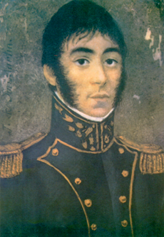

Origen

El Regimiento de Granaderos a Caballo General San Martín fue creado en 1812 por el Libertador José de San Martín, con el objetivo de proteger la independencia de las Provincias Unidas del Río de la Plata.
Su formación estuvo marcada por disciplina, coraje y compromiso con la libertad de la patria. A lo largo de la historia, el regimiento participó en campañas clave de la independencia y se convirtió en un símbolo de honor y lealtad.
Los granaderos se destacaron en combate y en ceremonias militares, manteniendo hasta hoy tradiciones que reflejan la historia y el legado de José de San Martín.